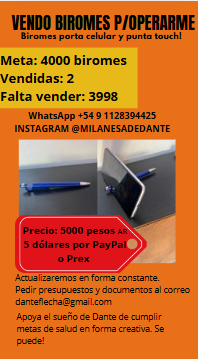
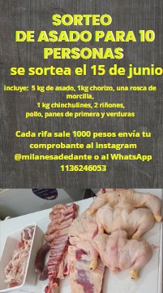

Flyer para Masajista
Diseño de flyer publicitario para Gastón, masajista profesional. El objetivo fue transmitir bienestar, relajación y confianza a través de una estética limpia y colores suaves. Ideal para difusión en redes sociales y en formato impreso.

Flyer para Dante
Diseño gráfico para una campaña de recaudación de fondos destinada a cubrir gastos médicos de Dante. El proyecto combinó un mensaje emotivo y elementos visuales impactantes para generar conciencia y promover la participación comunitaria.

Video para Gaston y Los Reales
Producción de video breve para promocionar las contrataciones de la banda tributo "Gastón y Los Reales". El diseño combinó imágenes dinámicas, animaciones de texto y música de fondo, destacando la identidad festiva y profesional de la banda.

Invitacion a evento
Diseño de invitación para un evento solidario con fines benéficos. La propuesta visual combina empatía y esperanza, utilizando tipografía clara y una paleta cálida para invitar a la comunidad a participar y colaborar con la causa.

Sorteo Asado para 10 personas
Diseño de invitación para un Sorteo solidario con fines benéficos. La propuesta visual combina empatía y esperanza, utilizando tipografía clara y una paleta cálida para invitar a la comunidad a participar y colaborar con la causa.

Publicidad para mi emprendimiento de marketing
Diseño promocional para mi propio emprendimiento de marketing digital. El enfoque visual transmite modernidad y confianza, destacando los servicios ofrecidos: gestión de redes, diseño gráfico, contenido estratégico y campañas publicitarias. Creado para captar nuevos clientes de forma clara y atractiva.